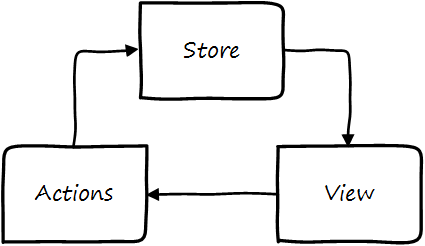
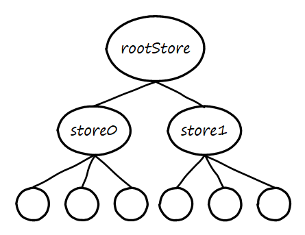

Satchel and Flux
Satchel is an opinionated implementation of Flux. For an introduction to Flux as a pattern and the reasoning behind it, you can see Facebook's overview. Satchel's version of Flux is a little bit different, but it's still focused on making a large application performant and easy to comprehend, develop, and test.
Unidirectional Data Flow
One of the key tenants of Flux is that data only flows in one direction. Satchel's data flow looks like this:

Application state lives in the store. When data in the store is changed, the view is rerendered to reflect it. The view executes actions, and only actions can modify the store. If you're familiar with traditional Flux you may notice that there's no dispatcher in the diagram. Satchel still contains a dispatcher - every time you execute an action you are actually dispatching it - but that's completely transparent to the action's caller.
Let's look at each of these entities in more detail.
The Store
The Satchel store contains the entirety of the application state.
The store is just data; unlike some implementations of Flux it doesn't contain business logic.
For convenience createStore can create multiple store objects, but internally they are rooted into a single state object.

The root store (and therefore the entire store underneath it) is a MobX observable - this is what allows views to update automatically when the store changes. For the most part you can interact with the store just like any other javascript object, but it is worth understanding how MobX works in order to take advantage of all it has to offer (and to be aware of some pitfalls).
It is recommended that the state be a strict tree of simple JavaScript types (objects, arrays, and primitives). This makes it easy to serialize and restore the store, which is necessary for an isomorphic web app and makes possible other dev tooling.
Views
The view is the UI layer of an application.
While Satchel could work with any view technology, it was built with React in mind.
The view layer consists of React components tagged with MobX's @observer decorator.
By making a component an observer it will automatically detect changes in the data it depends on and update itself.
In a Satchel app components are only responsible for rendering the UI. They should not contain any state (that belongs in the store) and they should not contain any business logic (that belongs in actions). Most or all views should be able to be written as stateless functional components. Given the state of the store and the props provided to it, a component should always render the same way.
Actions
Actions are the business logic of an application. In a Satchel application, actions are simply functions that modify the store or have other side effects. Typically actions are executed in response to some user-initiated event in the UI, but they may also be executed by external entities such as server notifications or timer callbacks. One action can call another, so it is possible to compose actions and organize code in whatever way makes sense for your application.
Internally, all actions go through Satchel's dispatch pipeline. This gives any middleware an opportunity to respond to the action. Moreover, the entire dispatch process is wrapped in a MobX transaction which means any UI updates are deferred until all state changes (due to actions or even middleware) are complete.
Motivations
Separation of concerns. The store is only concerned with containing the app state; the view is only concerned with rendering the UI; the actions implement the business logic of the application.
Code should be easy to understand and reason about. Flux's unidirectional data flow achieves this by avoiding the complicated and confusing interactions between app state and view that other patterns promote.
Testability. Both the view and actions are, at their core, simply functions that take some inputs and produce a result, which are easy to test.
Minimal boilerplate. Traditional Flux requires a lot of boilerplate code for views to subscribe to store updates, but MobX makes that unnecessary. And actions are simply function calls - there is no need to construct, dispatch, and process action objects as in other Flux implementations.